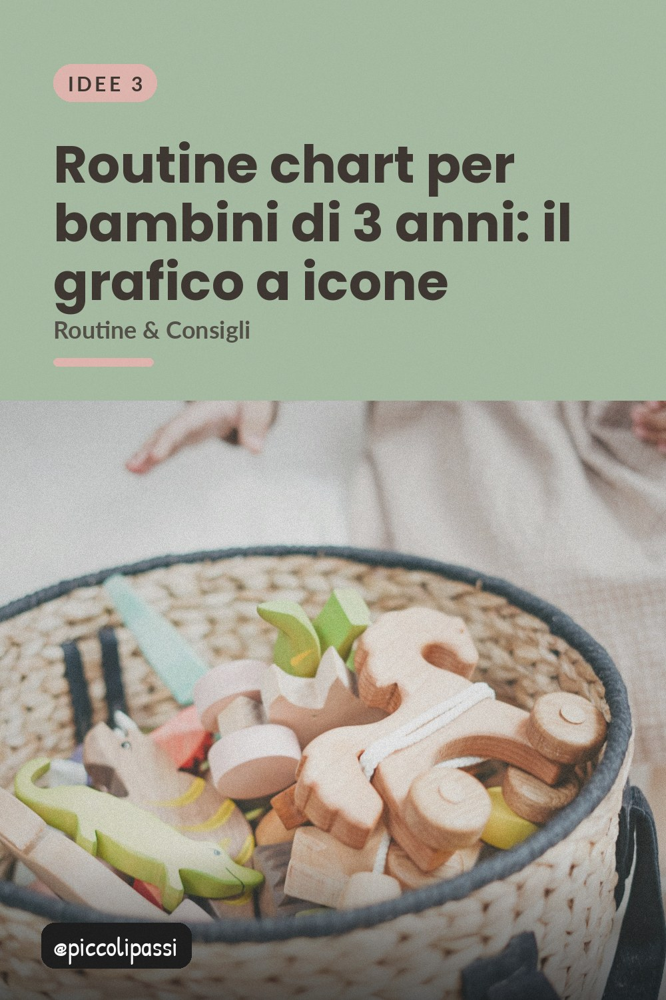

Tre anni sono l'età delle domande: cosa facciamo, quando, ogni giorno. Un semplice grafico a icone glielo spiega da solo.

A tre anni la memoria lavora bene e le promesse si ricordano: il problema non è che il bambino non capisca, è che noi non gli diamo niente di concreto da ricordare. Un foglio con le icone della giornata risolve quasi tutto.
Sveglia, colazione, scuola, gioco, merenda, cena, libri, sonno. Otto icone in fila: è tutto quello che serve per capire come funziona una giornata.
Fotografie o disegni grandi, non lettere. A tre anni non si legge, si guarda: e quello che si vede si ricorda molto meglio.
Il bambino segna da solo l'attività fatta. È la parte che gli piace di più e l'unica che non richiede che tu supervisioni.
Il quarantacinque minuti prima: "tra poco si mangia". Le transizioni sono ciò che genera i capricci, e un foglio le rende prevedibili.
Mezza dozzena di idee brevi da alternare: motorio, creativo, silenzioso. Bastano a riempire i pomeriggi senza televisione né tablet.
Attaccato in corridoio, all'altezza dei suoi occhi. Se serve chiedere ogni giorno quale sia il turno, il foglio non è nel posto giusto.